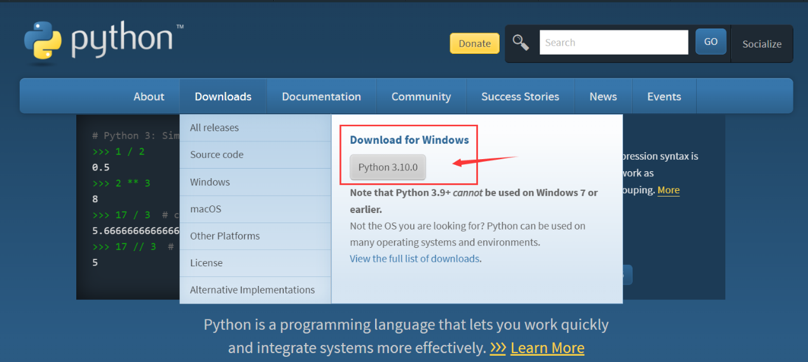

安装与配置环境
系统环境需求
支持在 Windows 10、Windows 11，MacOS，Ubuntu 或其他 Linux 桌面操作系统中开发。
本文所有的应用示例基于 Windows 10 操作系统，其他操作系统也可参考使用。
安装Python环境
打开Python官网 。
对于Windows 系统来说，最便捷的安装包下载方法就是在官网首页点击如下图所示的图标进行下载。

其他操作系统或是其他发行版本则可以在 Downloads 选项栏中进行选择。
建议使用python 3.7以上的版本。
开始安装时一定要记得勾选Add Python 3.x to PATH，这样可以免除再手动添加进PATH。

按照安装提示逐步操作即可顺利完成安装 。
安装mpremote工具
MicroPython 开源社区现已推出一款开发辅助工具：mpremote ，我们可以通过它与开发板建立串口通信，使用REPL，管理开发板上的文件系统，它还具有 mount 和 mip 功能，将在后续章节详述（准备中）。
安装完Python环境后，即可在终端使用pip安装mpremote了。
在Windows系统中打开PowerShell，其他操作系统则打开对应的终端，输入以下命令安装 mpremote。
pip install mpremote
安装mpbridge工具
mpbridge 是基于 mpremote 开发的CLI工具，主要提供自动化同步文件的功能，提高开发效率。
在终端中输入以下命令安装 mpbridge。
pip install mpbridge
安装 Visual Studio Code
MicroPython的使用并不依赖于特定的开发工具，只要能与开发板建立串口通信，即可获得 MicroPython的交互式解释器（REPL）。
很纯粹的说，我们基本只需要一个文本编辑器来编辑代码，然后通过mpremote工具或mpbridge工具上传我们的 .py 脚本文件或其他文件到开发板中即可。
对于具体的编辑器，综合基本的代码补全、语法高亮、集成终端以及轻量化、多平台适配的需求，我推荐使用 Visual Studio Code (VScode) ，它也可能已经是你最熟悉的工具之一了。
可能需要参考的VScode文档：
官方文档为英文，中文用户可以使用网页在线翻译功能辅助阅览，Edge浏览器的在线翻译使用方法。
All in Web 人士，极简主义人士，试试Web端的VScode，本地操作系统开个终端使用mpremote或mpbridge同步文件，MicroPython REPL。
其他推荐的编辑器
- Thonny ，树莓派基金会赞助过的开源图形化python编辑器，Raspberry Pi OS（Raspbian）出厂集成，树莓派用户入门首选。
- PyCharm 社区版 ，免费的社区版，够用，还带有micropython特殊库的代码补全，虽然不完整且很久没更新了。
- Jupyter 同样是Web端的编辑器，专业性更强，更python，还支持网页终端。